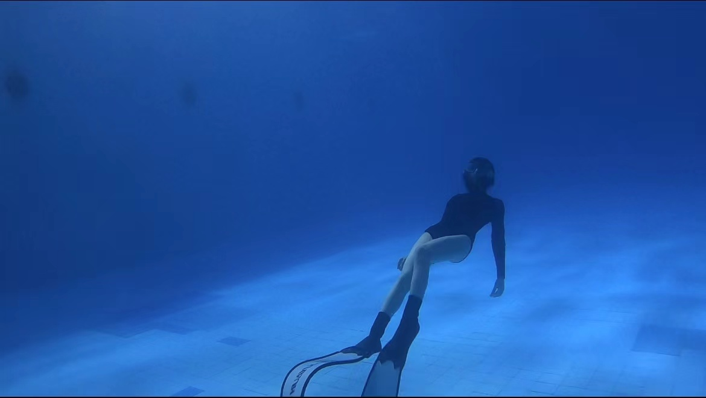

Who is Hilda
Hilda is a lively and lovely girl. She was born in Hunan, China and grew up in Shenzhen. She is a slow starter and at first you might think she is shy, but get to know her better and you will find her interesting soul!.
This is Hilda Dai. Nice to meet you!
Hobbies of Hilda
Diving
Hilda is very fond of the sea and all sports related to it. She is learning to freedive and she found that it is very peaceful and relaxing when diving. Hilda has now obtained her AIDA 2 star qualification and has plans to continue her free diving studies further. Hilda hopes to dive in all the beautiful seas around the world.
Singing
Hilda is very fond of music. She likes to sing when she is in a good mood and also likes to sing to relieve herself when she is in a bad mood. She may not be a very good singer, she may not have a very good singing talent. But it doesn't matter to her, she just likes to sing. By the way, her favourite singer is Enrique Iglesias.
Check Enrique's beautiful voice!
Dancing
Hilda studied traditional Chinese dance for ten years before attending secondary school and obtained a Grade 10 certificate in Chinese dance. But unfortunately, Hilda gave up learning dance after she started secondary school. However, Hilda still loves dance, so she has decided to continue learning it in her spare time in the future. Now she is interested in K-pop dance.
Educational experience
Hilda is a well-educated young woman. She went to study in the UK after completing her primary, secondary and undergraduate education in China. Click on the links below to find out more about Hilda's schools.
- Shenzhen Experimental Middle School(2010-2013)
- Shenzhen Experimental High school(2013-2016)
- Hunan University(2016-2020)
- University of Warwick(2021-2022)